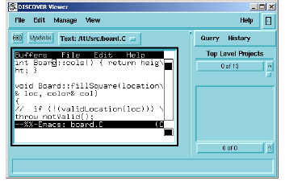

Working With the Viewer
The Viewer offers the primary means of interacting with your source code. It is here that you can use your IDE and configuration management system to examine source code, check out files, make changes, and check files back in.
You can start the Viewer from the Browser or from the Group Manager, using any of the following methods:
• In the Browser, select View > New Viewer or View > [View Type]. This starts an empty Viewer or launches the specified view for the selected entity, respectively. You can have multiple Viewers open at once.
• Double-click any entity or instance in the Browser’s Elements or Results column. This displays a new Viewer with the text view of the source code for the selected entity or instance.
• Select an entity or instance in the Browser’s Elements or Results column, then select View > Text. This also displays a text view.
• Select one or more groups in the Group Manager, and choose Browse > Minibrowser. This generates a list containing the elements that belong to the selected groups. The list appears in the Minibrowser, at the right side of the Viewer.
• Select one or more groups in the Group Manager, then select Browse > Instances. This generates a list containing every instance of the elements that belong to the selected groups. The list appears in the Minibrowser, at the right side of the Viewer.

The viewer menu contains four options:
• File allows you to generate further information about text symbols you select in your source code. For example, you can open a symbol’s definition; display its call tree or inheritance values; open another type of view for the same content; and save and print data.
• Edit allows you to cut, copy, and paste text, as well as perform searches for text strings in your source file. This menu also allows you to switch from the Emacs editor to a gVim editor.
• CM, as with the Manage menu, the viewer CM menu allows you to communicate with your configuration management system.
• View allows you to manipulate your view arrangement, control zoom, and refresh the data that is displayed (see the following paragraphs for examples).
The Viewer is designed to work in conjunction with your integrated editor—to view and manipulate your source code, and the Minibrowser—to perform further queries on Viewer content. Together, these tools create a powerful, unique perspective of working with your source code.
For example, you can perform an initial Where > Defined query in the Browser to discover the file where a selected function is defined. You can then double-click the file name in the Results pane to open the source code for the file that contains the function’s definition. Once you have the file open in the Viewer, you can check it out, make changes, and check it back in, or select other areas of text within the file and perform additional queries (such Where > Defined) for other entities in the source file.